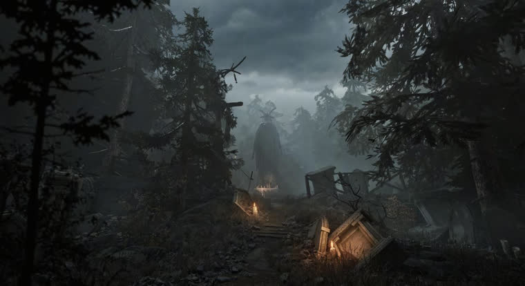
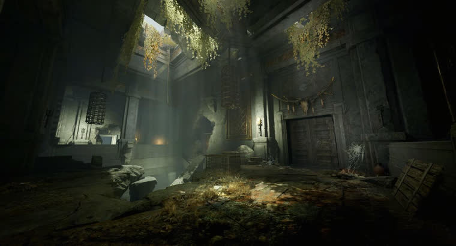
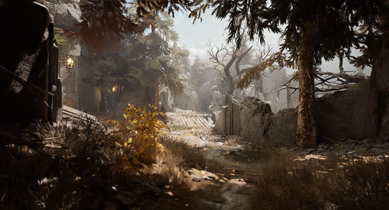
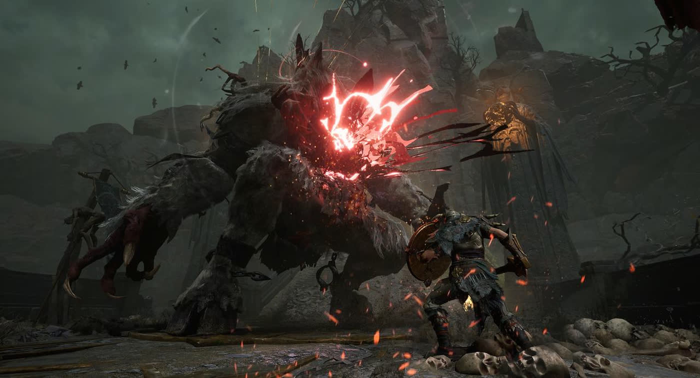
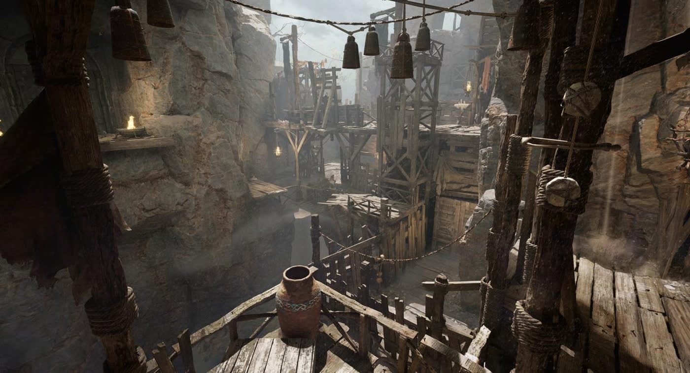

Fell firstThe Capital
The Old Royal SeatThe heart of civilization, first to be swallowed by the fog. Out of its ruin walked the scholar Otto — the origin point of Weavereach's darkest tragedy.
The gods went to war and killed each other, and their blood became a golden fog. This is the timeline of what they left behind — a dead world, from the age of gods to the mist that swallowed them.
What the world was before the fog — the weave, the tree, and the powers that tended them.
Existence was once held together by the Web of Fate — a living weave that bound the past, present, and future destinies of every soul into a single order. It was tended by a silent deity the world remembers only as the Fate Goddess, whose story is knotted into Yggdrasil, the world-tree.
From that bond between goddess and tree came the Woodlings — the small bark-and-branch folk who still linger in the ruins. Their oldest tellers insist that they and the Goddess were "born of the same root."
The Fate Goddess was not alone. The pantheon held names now spoken only in curses and prayers: Kjernnos, whose blood would prove the most corrosive of all; Argus, remembered for teaching mortals lightning, and for the meteor-fall omen called the Decree of Argus; and Velvar, under whose "silent gaze" mortals are still said to find the courage to go on. Against them all stood the Outer Gods — unknowable powers from beyond the weave.
How a war in heaven ended the world — the single catastrophe the whole timeline turns on.
The end came with a warning in the sky: three nights of falling stars, a meteor storm the last survivors would remember ever after as the Decree of Argus.
The pantheon went to war with the Outer Gods. It did not end in victory. It ended in mutual annihilation — every deity, on both sides, fell.
Divine blood soaked into the land and congealed into the Gyldenmist: a golden, corrosive fog that warps souls, drives the living to madness, and mutates them into the shambling Corroded.
With its keepers dead, the weave came undone. Destiny itself frayed — souls could no longer find their way home, and the dead began to pile up in the fog, unable to return. This unravelling is the Mistfall.
One fragment of the Fate Goddess's soul endured the war. It was reborn into the mortal ruins as a maiden — Dew — carrying just enough of the weave to begin mending it.
After the Mistfall, the world collapsed region by region — and left behind its cruellest stories.

Fell firstThe heart of civilization, first to be swallowed by the fog. Out of its ruin walked the scholar Otto — the origin point of Weavereach's darkest tragedy.

The northern sinA stronghold over a mining quarter, and the site of the world's worst sin: the soul experiments — a desperate attempt to stitch the dead back into the living.

Where souls drownedA woodland of broken bridges and tombs where "uncontrolled souls and the Gyldenmist have intertwined." Somewhere within it, a priestess wanders — dying, and waking, and dying again.

The royal scholar of the Capital, driven mad by a mining collapse and slow starvation, was drenched in the divine blood of Kjernnos and remade into Otto, the Flesheater — a flesh-devouring horror, and a prison for every lost soul near him. Among them was his own daughter, Drífa. Only when the father was finally silenced could her soul come home.
“Now, his wails of grief and fury have finally been silenced.”
The Flesheater's Feast
His grief still echoes through the ruins — a blacksmith brother, Dramm, tolling a Bell of Return for a sister the fog would not give back.
The soul experiments claimed one last victim: a priestess of Brandrgarde, the Prayer of the Moon, sealed away in Hallowgrove. Bound between endless death and waking, she was twisted into Sálmar, the Cursed Moonwane — the hidden hand behind the whole tragedy, "pulling the strings of countless souls and fates." The general who presided over the sin, Harald, was hollowed out by the mist into a golden-axed monster of his own.
“Once mortals coveted the authority of the divine, all attempts turned into calamity.”
Soul Experiment
The Fate Goddess did not die completely — and where destiny frayed, something began to weave it back.

A single fragment of the Fate Goddess's soul survived the war, reborn into the ruins as a mysterious maiden named Dew. Where the Web had come undone, she began — quietly, patiently — to mend it.
She calls fallen heroes back from death and clothes them in immortal flesh: the Gyldhunters, the Mist Hunters — raised to gather the spilled divine blood, the Gyldenblod, and carry it back to her thread by thread, to re-weave the shattered Web of Fate.
They gather at a harbor in the ruins called Winds' Rest, where an old white raven named Soekja keeps the oldest stories — it is he who still recounts the bond between the Fate Goddess and Yggdrasil — and where the Bells of Return toll for souls trying to find their way home.
The history reaches the present — and the old sin is not finished.
The soul experiments never truly ended. A clan called the Varg has taken up the old sin and gone further — weaving the harvested dead into Cocoon Puppets, forcing countless souls into a single vessel to build a False God.
A counterfeit deity whose birth would tear the already-broken Web of Fate fully apart. The world died once. The Varg clan may be about to finish the job — and it is that unravelling the mist still hides.
Season 1 · The Soul Hunt · in progress · updated Aug 22, 2026
And the hunt has begun in earnest. Across Weavereach the Soul Harvest now runs — Gyldhunters gathering Soul Cocoons from the mist and cutting down the ritual elite that guards them, the Soulgnawer, before the fog closes in. At Wind's Rest a stranger has arrived, and the news they carry is said to push the hunters toward a fate none of them chose — the season's threads drawn back, once again, to the Fate Chart.
Older powers stir with them. A Golden Woodling now hides among the ruins wearing the shape of treasure — its golden glow the bait, its kinship to the Fate Goddess's little folk half-forgotten. And in Hallowgrove a sealed Ancestor Tree has risen from the drowned forest, its ancient spirits offering gifts to whoever breaks its seal first — if rival hunters do not tear it open over each other's bodies. The season still unfolds; this is the story as far as the mist has given it up.
Fragments of the world in its own words — lines drawn from what little the game speaks aloud.